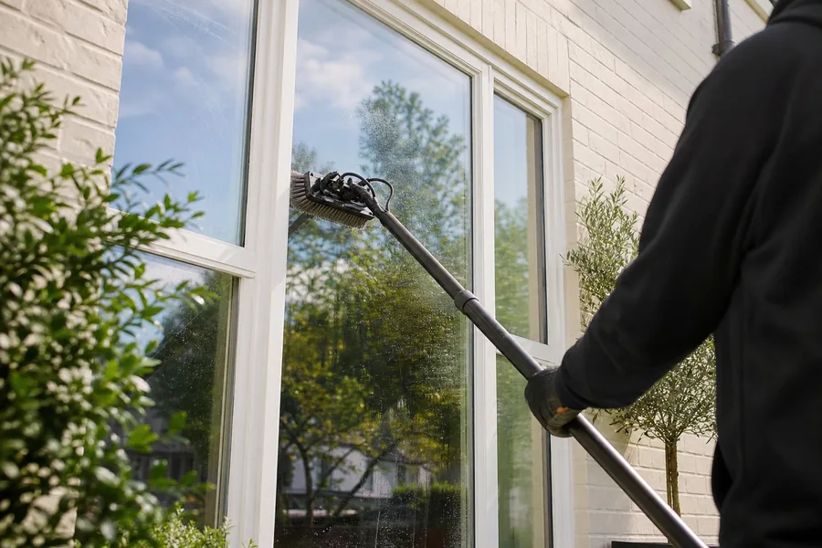
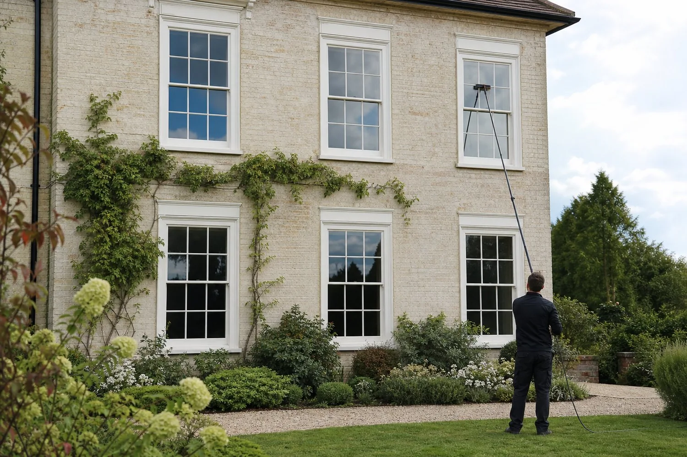
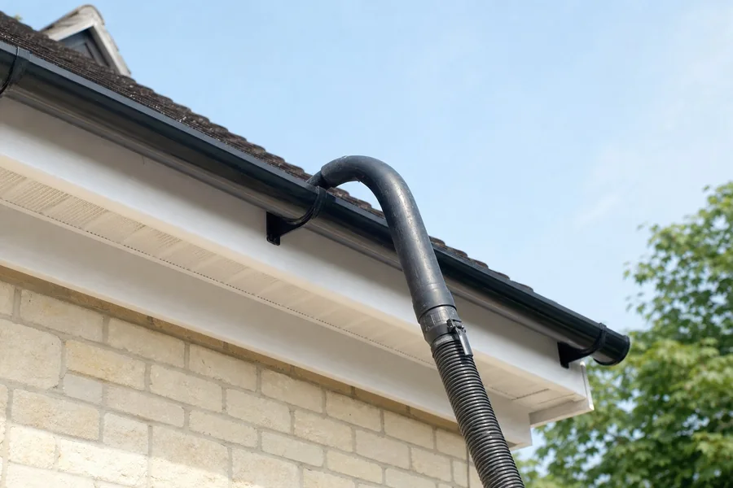
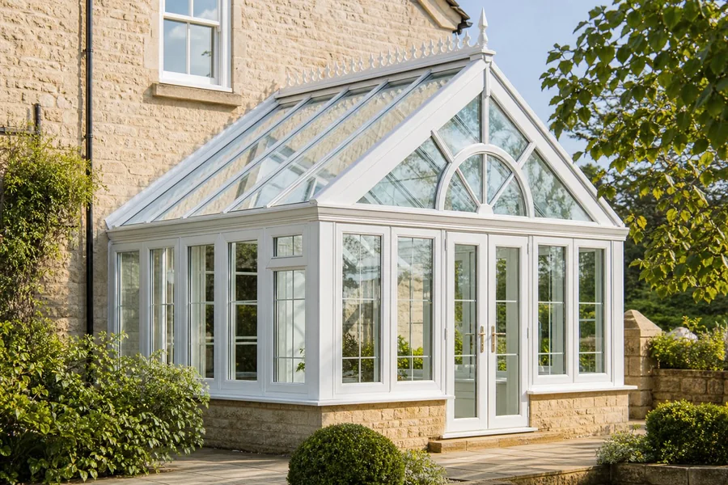
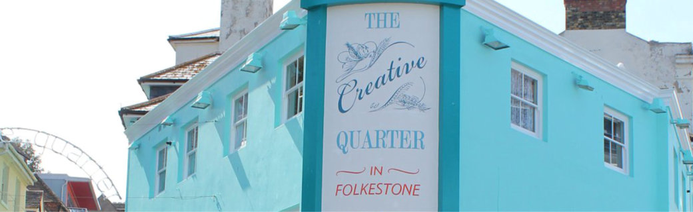

Clear, cared-for windows and frames, cleaned with heated pure water and specialist water-fed poles.
EXPLORE SERVICEYOUR LOCAL CLEANING SPECIALISTS
A little more care for the places you love. Professional window and exterior cleaning for homes and businesses across South East Kent.

01 / WHAT WE DO
From the windows you look through to the gutters above them, we take care of the details that make your property feel its best.

Clear, cared-for windows and frames, cleaned with heated pure water and specialist water-fed poles.
EXPLORE SERVICE
Leaves and debris, taken care of. Our commercial-grade gutter vacuum reaches up from the ground.
EXPLORE SERVICE
Let the light back in with a thoughtful top-to-toe clean for your conservatory, roof panels and frames.
EXPLORE SERVICEService images are illustrative.
02 / THE JENNINGS DIFFERENCE
Founded by Scott Jennings, we’ve grown from a ladder, bucket and squeegee into a fully equipped cleaning service. What hasn’t changed is our commitment to treating your property with care.
A little more about usOur filtered water and water-fed poles help us clean windows and frames, including those awkward higher-up spots.
We take care around your home and grounds, and aim to leave them as secure as we found them.
Ask about our regular service plans, including 4, 6 or 8-week window-cleaning cycles.
KIND WORDS
We love hearing from the people whose homes and businesses we look after.
More customer storiesWe were initially unsure about you leaving the windows wet, but they have dried amazingly clean!
03 / ON YOUR DOORSTEP
Based in South East Kent, we look after homes and businesses in the towns and villages around us.
Ask about your area
Folkestone · Hythe · Sandgate · Hawkinge · Lyminge · Elham · Canterbury · Ashford · and the villages in between
04 / GOOD TO KNOW
Still have a question? We’re always happy to have a chat.
Call 01303 840428We serve Folkestone, Hythe, Elham, Lyminge, Hawkinge, Canterbury, Ashford and many surrounding towns and villages in South East Kent. Get in touch if you’re unsure whether we cover your area.
Our published window-cleaning service plans include 4, 6 and 8-week cycles. See the service plans or contact us to discuss what suits your property.
Our water is purified using particle filtration and reverse osmosis. We use it with water-fed poles to clean windows and frames, including some difficult-to-reach areas.
Call us on 01303 840428, or use the enquiry form on our original website to tell us what you need.
LET’S GET STARTED
Tell us what you need and we’ll be happy to help with a free quote.